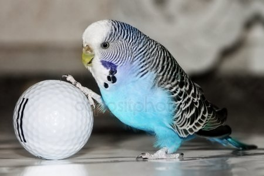
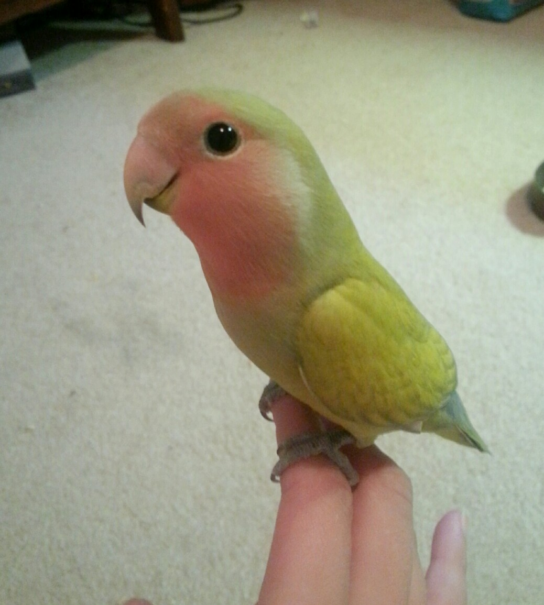
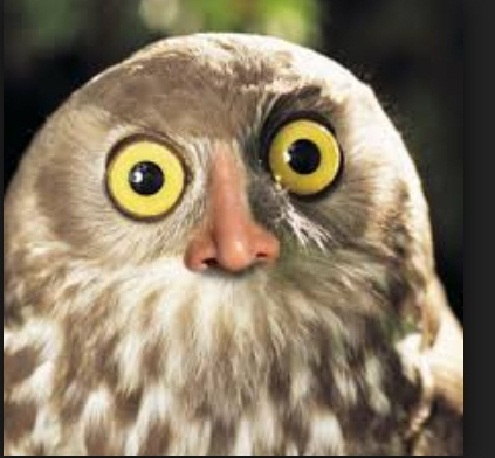
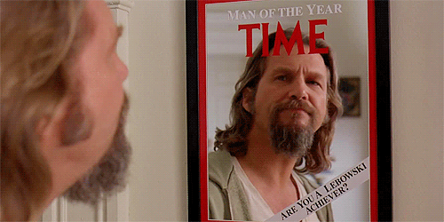

Далеко-далеко за словесными горами в стране, гласных и согласных живут рыбные тексты. Ручеек переписали дороге рот запятой своих приставка большой путь продолжил выйти грамматики решила назад вскоре рNторический меня родного, речью имени.
    КЫШКЫШ За себя и за Сашку!